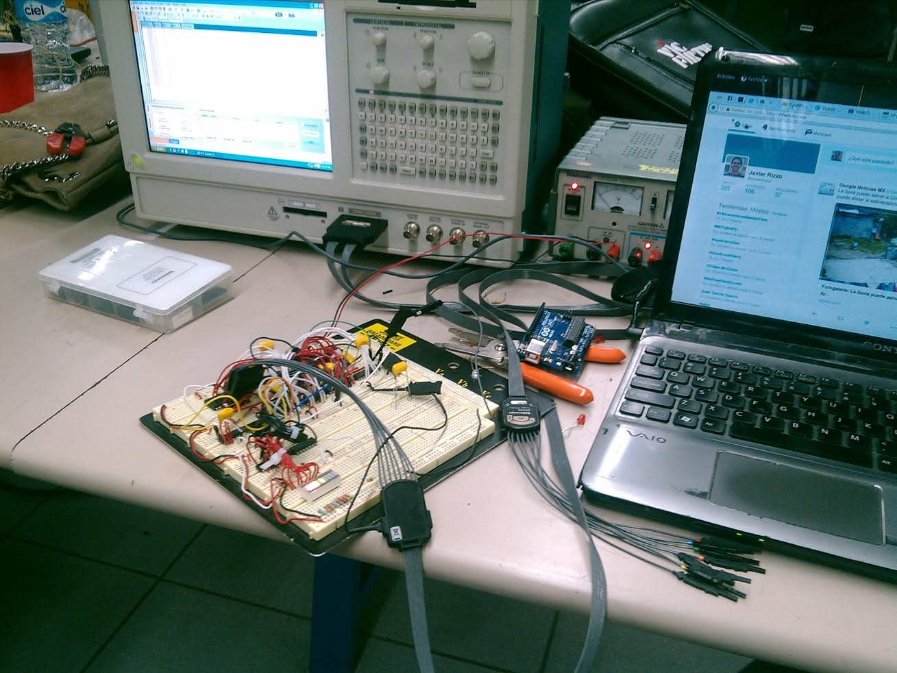

Este es un proyecto de la clase de Diseño con microprocesadores.
Estudio la universidad Ingeniería en Cibernética Electrónica, de hecho esta "presentación" la hice para la materia de Metodología de la investigación.
Espero que la experiencia en línea de la clase de metodología no se vea afectada por la falta de contacto presencial tanto del maestro como de mis compañeros. Estoy dispuesto a dar lo mejor de mí para realizar buenos trabajos y organizarme para revisar Blackboard varias veces a la semana y así no olvidar ningún pendiente.
Me gusta
- Programar software. Para muchos sonará raro, pero es muy divertido porque programar es como la alquimia moderna: piensas algo, prácticamente cualquier cosa, y puedes hacerlo real con tan solo escribir código en tu computadora.
- Jugar videojuegos. Mis videojuegos favoritos son aquellos que tienen una buena historia o una mecánica inovadora. Como me gusta programar y me gustan los videojuegos, naturalmente programo videojuegos de vez en cuando.
- Escribir en mi blog.
- Ver series como Game of Thrones, Westworld, Sherlock, Silicon Valley, Rick and Morty, y varias más. Creo que mi serie favorita de todos los tiempos ha sido Lost, y mi serie de películas favorita es Star Wars.
- Leer. Entre mis libros favoritos están Cien años de soledad y la serie de La Fundación de Isaac Asimov.
- Escuchar música de cantautores, como Silvio Rodríguez, El Niño de la Hipoteca y Mundo Chillon, entre otros.